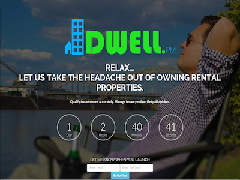
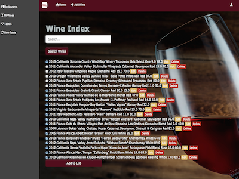
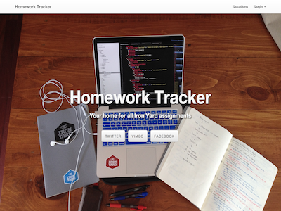
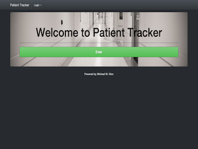

College of Charleston
Business Administration & Hospitality Tourism Management - Graduated: 2011
At the College of Charleston I double majored in Hospitality Tourism Management and Business Administration with a minor in Spanish.
Business Coursework
PROFESSIONAL BACK-END SOFTWARE DEVELOPER
Ruby Newbie, Food and Wine lover and Technology Fanatic!
My name is Michael Dion, and I am a back-end web developer. I’ve spent the majority of my time working in hospitality. I went to the College of Charleston and double majored in Hospitality and Tourism Management and Business Administration. After graduating, I worked at The Sanctuary on Kiawah Island, Stowe Mountain Resort, and most recently Husk Restaurant. I always thought owning a restaurant or wine bar would be my life long career, but I found myself wanting more.
I needed to find something that would challenge me daily as well as find a career where the learning is never-ending. I have always had a passion for technology and if you ask any of my former coworkers, I love talking about tech. I did begin applying to some of the local tech companies, but I found that just having a passion for technology was not enough, I needed some concrete experience.
So in the summer of 2014 I made a major career pivot. I left my job, and jumped into Ruby on Rails at The Iron Yard. The Iron Yard is an intense three month course where you can learn to build fully functioning Ruby based web applications. I knew that it would be a difficult course, and it was, but what I didn’t realize was how much fun I would have. I met so many great people and even found myself back-end developing for a local startup.
I am now looking for a full-time job working as a back-end web developer. Please check out my portfolio and resume, and feel free to contact me.
- Michael W. Dion
Software development skills.
Business Administration & Hospitality Tourism Management - Graduated: 2011
At the College of Charleston I double majored in Hospitality Tourism Management and Business Administration with a minor in Spanish.
Business Coursework
Ruby on Rails Development - Graduated: October 2014
At The Iron Yard I was taught Ruby on Rails, in a three-month intensive course to become a professional back-end software developer.
Proficiencies
Software Development Projects
Final Project / The Iron Yard Academy/ October 2014
WineCrush is a web based ruby application that allows you to keep track of your favorite wines, discover new wines, and enables restaurants to update their wine lists more effectively.
Technologies
Mid-Term Project / The Iron Yard Academy/ September 2014
Homework Tracker is a web based ruby application that lets The Iron Yard cohorts sign in as a student to submit homework and access feedback from instructors
Technologies
Project / The Iron Yard Academy/ August 2014
Patient Tracker is a web based ruby application that provides hospitals with a better way to track patients as they progress from admission to discharge.
Technologies
(864) 630-0061
mwdion@gmail.com
\![ Dwell.pm Back-End Developer / Charleston, SC / September 2014 - Present Dwell.pm is a web based ruby application that provides property and tenant management for small to mid-sized rental and property owners. Technologies HTML & CSS Ruby On Rails Javascript JQuery AJAX WebApp  WineCrush Final Project / The Iron Yard Academy/ October 2014 WineCrush is a web based ruby application that allows you to keep track of your favorite wines, discover new wines, and enables restaurants to update their wine lists more effectively. Technologies HTML & CSS Ruby On Rails Javascript JQuery AJAX WebApp GitHub Code  Homework Tracker Mid-Term Project / The Iron Yard Academy/ September 2014 Homework Tracker is a web based ruby application that lets The Iron Yard cohorts sign in as a student to submit homework and access feedback from instructors Technologies HTML & CSS Ruby On Rails Javascript JQuery AJAX WebApp GitHub Code  Patient Tracker Project / The Iron Yard Academy/ August 2014 Patient Tracker is a web based ruby application that provides hospitals with a better way to track patients as they progress from admission to discharge. Technologies HTML & CSS Ruby On Rails Javascript JQuery AJAX WebApp GitHub Code](img/portfolio/large/01.png){kind=link}
{kind=link}
{kind=link}
{kind=link}